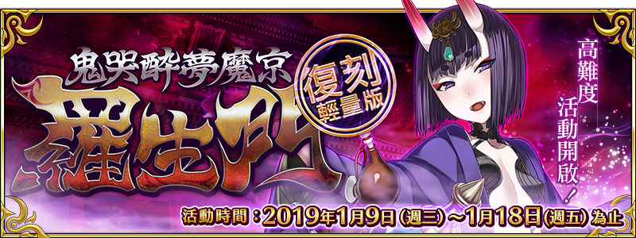
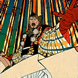

本頁面資訊僅供參考，實際情況請以遊戲內資料為準。
由於直接使用官方翻譯，可能會與其他站內翻譯相異，敬請見諒。
其他公告內容請參照日版當時公告翻譯。

| 活動限定效果 | ||
|---|---|---|
 | 自身在鬼哭醉夢魔京 羅生門的攻擊威力提升200%(最大解放:300%) | |
| 我方全體<含候補>在鬼哭醉夢魔京 羅生門的攻擊威力提升50%(最大解放:100%) | |
 | 鬼葫蘆的掉落獲得數增加3個(最大解放:4個) | |
| 鬼葫蘆的掉落獲得數增加2個(最大解放:3個) | |
|  | 鬼葫蘆的掉落獲得數增加1個(最大解放:2個) |
| 其他PICK UP Servant | ||
|
| ||
採用GoogleDrive資料夾呈現

| 任務 | 獎勵 | 解鎖條件 |
|---|---|---|
| No.1 【第1日】的任務 1/6 給茨木童子造成500,000傷害 | 1/8 23:00後 | |
| No.2 【第1日】的任務 2/6 給茨木童子造成1,000,000傷害 | 1/8 23:00後 | |
| No.3 【第1日】的任務 3/6 給茨木童子造成2,000,000傷害 | 1/8 23:00後 | |
| No.4 【第1日】的任務 4/6 通關1次任務 | 10 | 1/8 23:00後 |
| No.5 【第1日】的任務 5/6 通關3次任務 | 20 | 1/8 23:00後 |
| No.6 【第1日】的任務 6/6 通關5次任務 | 30 | 1/8 23:00後 |
| No.7 【第2日】的任務 1/8 給茨木童子造成500,000傷害 | 1/12 0:00後 | |
| No.8 【第2日】的任務 2/8 給茨木童子造成1,000,000傷害 | 1/12 0:00後 | |
| No.9 【第2日】的任務 3/8 給茨木童子造成2,000,000傷害 | 1/12 0:00後 | |
| No.10 【第2日】的任務 4/8 給茨木童子造成3,000,000傷害 | 1/12 0:00後 | |
| No.11 【第2日】的任務 5/8 給茨木童子造成5,000,000傷害 | 5 | 1/12 0:00後 |
| No.12 【第2日】的任務 6/8 通關1次任務 | 10 | 1/12 0:00後 |
| No.13 【第2日】的任務 7/8 通關3次任務 | 20 | 1/12 0:00後 |
| No.14 【第2日】的任務 8/8 通關5次任務 | 30 | 1/12 0:00後 |
| No.15 【第3日】的任務 1/9 給茨木童子造成500,000傷害 | 1/13 0:00後 | |
| No.16 【第3日】的任務 2/9 給茨木童子造成1,000,000傷害 | 1/13 0:00後 | |
| No.17 【第3日】的任務 3/9 給茨木童子造成2,000,000傷害 | 1/13 0:00後 | |
| No.18 【第3日】的任務 4/9 給茨木童子造成3,000,000傷害 | 1/13 0:00後 | |
| No.19 【第3日】的任務 5/9 給茨木童子造成5,000,000傷害 | 5 | 1/13 0:00後 |
| No.20 【第3日】的任務 6/9 給茨木童子造成6,000,000傷害 | 1/13 0:00後 | |
| No.21 【第3日】的任務 7/9 通關1次任務 | 10 | 1/13 0:00後 |
| No.22 【第3日】的任務 8/9 通關3次任務 | 20 | 1/13 0:00後 |
| No.23 【第3日】的任務 9/9 通關5次任務 | 30 | 1/13 0:00後 |
| No.24 【第4日】的任務 1/10 給茨木童子造成500,000傷害 | 1/14 0:00後 | |
| No.25 【第4日】的任務 2/10 給茨木童子造成1,000,000傷害 | 1/14 0:00後 | |
| No.26 【第4日】的任務 3/10 給茨木童子造成2,000,000傷害 | 1/14 0:00後 | |
| No.27 【第4日】的任務 4/10 給茨木童子造成3,000,000傷害 | 1/14 0:00後 | |
| No.28 【第4日】的任務 5/10 給茨木童子造成5,000,000傷害 | 5 | 1/14 0:00後 |
| No.29 【第4日】的任務 6/10 給茨木童子造成6,000,000傷害 | 1/14 0:00後 | |
| No.30 【第4日】的任務 7/10 給茨木童子造成8,000,000傷害 | 5 | 1/14 0:00後 |
| No.31 【第4日】的任務 8/10 通關1次任務 | 10 | 1/14 0:00後 |
| No.32 【第4日】的任務 9/10 通關3次任務 | 20 | 1/14 0:00後 |
| No.33 【第4日】的任務 10/10 通關5次任務 | 30 | 1/14 0:00後 |
| No.34 【第5日】的任務 1/11 給茨木童子造成500,000傷害 | 1/15 0:00後 | |
| No.35 【第5日】的任務 2/11 給茨木童子造成1,000,000傷害 | 1/15 0:00後 | |
| No.36 【第5日】的任務 3/11 給茨木童子造成2,000,000傷害 | 1/15 0:00後 | |
| No.37 【第5日】的任務 4/11 給茨木童子造成3,000,000傷害 | 1/15 0:00後 | |
| No.38 【第5日】的任務 5/11 給茨木童子造成5,000,000傷害 | 5 | 1/15 0:00後 |
| No.39 【第5日】的任務 6/11 給茨木童子造成6,000,000傷害 | 1/15 0:00後 | |
| No.40 【第5日】的任務 7/11 給茨木童子造成8,000,000傷害 | 5 | 1/15 0:00後 |
| No.41 【第5日】的任務 8/11 給茨木童子造成10,000,000傷害 | 5 | 1/15 0:00後 |
| No.42 【第5日】的任務 9/11 通關1次任務 | 10 | 1/15 0:00後 |
| No.43 【第5日】的任務 10/11 通關3次任務 | 20 | 1/15 0:00後 |
| No.44 【第5日】的任務 11/11 通關5次任務 | 30 | 1/15 0:00後 |
| No.45 【第6日】的任務 1/11 給茨木童子造成500,000傷害 | 1/16 0:00後 | |
| No.46 【第6日】的任務 2/11 給茨木童子造成1,000,000傷害 | 1/16 0:00後 | |
| No.47 【第6日】的任務 3/11 給茨木童子造成2,000,000傷害 | 1/16 0:00後 | |
| No.48 【第6日】的任務 4/11 給茨木童子造成3,000,000傷害 | 1/16 0:00後 | |
| No.49 【第6日】的任務 5/11 給茨木童子造成5,000,000傷害 | 5 | 1/16 0:00後 |
| No.50 【第6日】的任務 6/11 給茨木童子造成6,000,000傷害 | 1/16 0:00後 | |
| No.51 【第6日】的任務 7/11 給茨木童子造成8,000,000傷害 | 5 | 1/16 0:00後 |
| No.52 【第6日】的任務 8/11 給茨木童子造成10,000,000傷害 | 5 | 1/16 0:00後 |
| No.53 【第6日】的任務 9/11 通關1次任務 | 10 | 1/16 0:00後 |
| No.54 【第6日】的任務 10/11 通關3次任務 | 20 | 1/16 0:00後 |
| No.55 【第6日】的任務 11/11 通關5次任務 | 30 | 1/16 0:00後 |
| No.56 【第7日(最終日)】的任務 1/13 給茨木童子造成500,000傷害 | 1/17 0:00後 | |
| No.57 【第7日(最終日)】的任務 2/13 給茨木童子造成1,000,000傷害 | 1/17 0:00後 | |
| No.58 【第7日(最終日)】的任務 3/13 給茨木童子造成2,000,000傷害 | 1/17 0:00後 | |
| No.59 【第7日(最終日)】的任務 4/13 給茨木童子造成3,000,000傷害 | 1/17 0:00後 | |
| No.60 【第7日(最終日)】的任務 5/13 給茨木童子造成5,000,000傷害 | 5 | 1/17 0:00後 |
| No.61 【第7日(最終日)】的任務 6/13 給茨木童子造成6,000,000傷害 | 1/17 0:00後 | |
| No.62 【第7日(最終日)】的任務 7/13 給茨木童子造成8,000,000傷害 | 5 | 1/17 0:00後 |
| No.63 【第7日(最終日)】的任務 8/13 給茨木童子造成10,000,000傷害 | 5 | 1/17 0:00後 |
| No.64 【第7日(最終日)】的任務 9/13 給茨木童子造成12,500,000傷害 | 5 | 1/17 0:00後 |
| No.65 【第7日(最終日)】的任務 10/13 給茨木童子造成15,000,000傷害 | 1/17 0:00後 | |
| No.66 【第7日(最終日)】的任務 11/13 通關1次任務 | 10 | 1/17 0:00後 |
| No.67 【第7日(最終日)】的任務 12/13 通關3次任務 | 20 | 1/17 0:00後 |
| No.68 【第7日(最終日)】的任務 13/13 通關5次任務 | 30 | 1/17 0:00後 |
| 鬼葫蘆 | |||
|---|---|---|---|
| 交換物 | 需求數 | 限制 | 共需 |
| 150 | 1 | 150 | |
| 200 | 1 | 200 | |
| 300 | 1 | 300 | |
| 400 | 1 | 400 | |
| 3 | 100 | 300 | |
| 6 | 100 | 600 | |
| 30 | 20 | 600 | |
| 30 | 20 | 600 | |
| 60 | 10 | 600 | |
| 45 | 20 | 900 | |
| 30 | 20 | 600 | |
| 30 | 20 | 600 | |
| 20 | 20 | 400 | |
| 20 | 20 | 400 | |
| 20 | 20 | 400 | |
| 20 | 20 | 400 | |
| 20 | 20 | 400 | |
| 30 | 20 | 600 | |
| 30 | 20 | 600 | |
| 30 | 20 | 600 | |
| 3 | 0 | 0 | |
| 2 | 500 | 1,000 | |
| 合計 | 10,650 | ||
| 黃金飯糰 | |||
|---|---|---|---|
| 交換物 | 需求數 | 限制 | 共需 |
| 1 | 0 | 0 | |
| 合計 | 0 | ||
| 力量飯糰 | |||
|---|---|---|---|
| 交換物 | 需求數 | 限制 | 共需 |
| 1 | 0 | 0 | |
| 合計 | 0 | ||